<footer>
  <div class="wrapper">
    <div class="wrapper__social">
      <ul class="wrapper-list" *ngFor="let item of listSocial">
        <li class="list-item">
          <a [href]="item.url" target="_blank">
            <i [class]="item.icon"></i>
          </a>
        </li>
      </ul>
    </div>
    <div class="wrapper__designed">
      <span>Designed © adrianmachado. </span>
    </div>
    <div class="wrapper__logo">
        
    </div>
  </div>
</footer>
